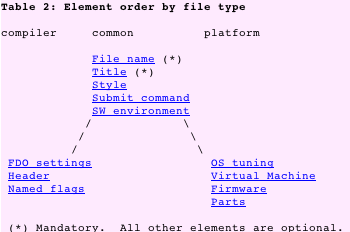

Last updated: $Date: 2011-08-16 18:43:20 -0400 (Tue, 16 Aug 2011) $ by $Author: CloyceS $
(To check for possible updates to this document, please see http://www.spec.org/cpu2006/Docs/ )
Contents
I. Introduction
II. Changes to system version requirements
A. Linux: a variety of toolsets
B. Unsupported toolsets: BSD dropped; Alpha updated.
III. Benchmark source code changes
IV. Run Rules Changed
V. New and Updated Features
A. New sysinfo
B. Changes to the runspec command
C. Changes to reports
D. Changes to config files
E. Changes to utility programs
F. Changes to log files
G. Changes to flags files
1. Summary of changes
2. Symptoms of old flags files
VI. Problems fixed by SPEC CPU2006 V1.2
Appendix: Open source updates
Note: links to SPEC CPU2006 documents on this web page assume that you are reading the page from a directory that also contains the other SPEC CPU2006 documents. If by some chance you are reading this web page from a location where the links do not work, try accessing the referenced documents at one of the following locations:
SPEC CPU2006 V1.2 is an incremental update to SPEC CPU2006 V1.1. Results generated with SPEC CPU2006 V1.2 are comparable to results from other V1.x releases and vice versa. SPEC CPU2006 V1.2 is intended to improve compatibility, stability, documentation and ease of use.
If you have already used SPEC CPU2006 V1.0 or V1.1 and already have configuration files, it is recommended that you read through this document.
Here are the top 3 changes to user-visible behavior that may cause surprises. You should be aware of these before using SPEC CPU2006 V1.2:
There are other changes, including bugfixes, better reporting of sponsors, more flexibility in config files, and much better environment logging. Please read on!
SPEC's toolset was updated and rebuilt for all supported operating systems. See the list of supported platforms in system-requirements.html.
For some (but not all) platforms, the tools rebuild has caused a change to the minimum required level of the OS:
| Operating System Requirements for SPEC CPU2006 | ||
|---|---|---|
| OS | Former minimum | V1.2 minimum |
| AIX PowerPC | AIX 5L V5.1 | AIX 5L V5.3 |
| HP-UX IPF | HP-UX 11iv2 | HP-UX 11iv3 |
| HP-UX PA-RISC | HP-UX 11iv2 | HP-UX 11iv31 |
| MacOS X PowerPC | MacOS X 10.2.8+ | MacOS X 10.3 |
Please ensure that you meet the minimum required version prior to installing SPEC CPU2006 V1.2.
There are many Linux distributions. SPEC has made an effort to support a wide variety of them. For details, please see the Linux table in system-requirements.html.
SPEC CPU2006 V1.1 provided unsupported tools built on BSD. These toolsets are not present in SPEC CPU2006 V1.2.
SPEC CPU2006 V1.1 provided tools built on Digital Unix V4.0F. For SPEC CPU2006 V1.2, the tools have been rebuilt on Tru64 Unix V5.1B.
Caution:
More importantly, some of the benchmarks themselves have not been ported for the environments represented by the unsupported toolsets:
The following benchmark changes were made in V1.2:
403.gcc: The input files were renamed to prevent them from being inadvertantly removed by the tools during multi-pass compilation. If you are studying the benchmarks with your own tools, or outside the SPEC tool harness, you may need to adjust your procedures.
Contents of $SPEC/benchspec/CPU2006/403.gcc/data/
SPEC CPU2006 SPEC CPU2006
V1.0, V1.1 V1.2
============== ===============
test/input: test/input:
cccp.i cccp.in
train/input: train/input:
integrate.i integrate.in
ref/input: ref/input:
166.i 166.in
200.i 200.in
cp-decl.i c-typeck.in
c-typeck.i cp-decl.in
expr2.i expr.in
expr.i expr2.in
g23.i g23.in
s04.i s04.in
scilab.i scilab.in
447.dealII
483.xalancbmk
Publishable results must adhere to the SPEC CPU2006 Run Rules. In SPEC's opinion, the changes do not affect the comparabilty of results between SPEC CPU2006 V1.0, V1.1, and V1.2, because the changes are primarily clarifications of the existing rules.
Here is a list of the rules that have have been changed, excerpted from the change history in runrules.html. (Reminder: as noted above, links go to the copy in the same directory as the document you are reading now; the most recent copy is the one at www.spec.org)
Regarding the last item above, please note that SPEC has centralized the Fair Use rules for all benchmarks to a single location, for the convenience of those who use SPEC results. The Fair Use rules for all SPEC benchmarks are now posted at a location which is intended to be easily memorable:
These user-visible features are new, updated, or newly documented for SPEC CPU2006 V1.2:
The example sysinfo program is substantially expanded. You can use it to automatically capture various system configuration items on systems running Linux, Mac OS X, Solaris, and Windows.
Note that the example sysinfo program is enabled by default!
It is on by default because SPEC believes that its virtues outweigh its limitations, both of which are summarized in this section.
By default, there will be more information in your platform notes. For example, by default Windows systems will include lines such as these:
Platform Notes
--------------
Sysinfo program C:\kit118/Docs/sysinfo
$Rev: 6775 $ $Date:: 2011-08-16 #$ \6d78399eddfd6b1e8813c4ae4a352725
running on snowcrash Thu Aug 11 08:38:31 2011
This section contains SUT (System Under Test) info as seen by
some common utilities. To remove or add to this section, see:
http://www.spec.org/cpu2006/Docs/config.html#sysinfo
Trying 'systeminfo'
OS Name : Microsoft Windows 7 Professional
OS Version : 6.1.7601 Service Pack 1 Build 7601
System Manufacturer: LENOVO
System Model : 2537LB8
Processor(s) : 1 Processor(s) Installed.
[01]: Intel64 Family 6 Model 37 Stepping 5 GenuineIntel ~2400 Mhz
BIOS Version : LENOVO 6IET75WW (1.35 ), 2/1/2011
Total Physical Memory: 3,892 MB
Trying 'wmic cpu get /value'
DeviceID : CPU0
L2CacheSize : 256
L3CacheSize : 3072
MaxClockSpeed : 2400
Name : Intel(R) Core(TM) i5 CPU M 520 @ 2.40GHz
NumberOfCores : 2
NumberOfLogicalProcessors: 4
(End of data from sysinfo program)
Also by default, the example sysinfo program will try to parse the above information into system description fields, such as:
hw_cpu_mhz = 2400 hw_cpu_name = Intel Core i5 M 520 hw_model = 2537LB8 hw_nchips = 1 sw_os000 = Microsoft Windows 7 Professional sw_os001 = 6.1.7601 Service Pack 1 Build 7601
Virtues of the example sysinfo program
It is hoped that users will find it useful that the information is recorded and that some fields are automatically populated, under program control, contemporaneously with your test.
Limitations of the example sysinfo program and likely surprises
You may see WARNINGS when you use it, because the utility is likely to write fields that are already in your config file:
WARNING: Your config file sets some fields that are also set by sysinfo:
hw_cpu_name, sw_os
To avoid this warning in the future, see
http://www.spec.org/cpu2006/Docs/config.html#sysinfo
If you see warnings such as the above, you will need to decide what to do about them. There are four options suggested in config.html.
Details about the sysinfo utility may be found in the config.html section About sysinfo, including how to selectively enable output types, how to resolve conflicting field warnings, and how to write your own sysinfo utility.
The --speed option is effective now for runspec, in addition to rawformat. A config file containing rate = 1 can therefore be overridden from the command line, and used for a SPECspeed run by adding --speed to the runspec line. In general, the command line takes precedence over the config file, so this change makes the switch more compatible with how other switches work.
If the test sponsor is not the same as the hardware vendor, this fact is now noted more prominently in the generated HTML, Postscript, and PDF reports.
The program specbzip2 is no longer present. Instead, compression is done via specxz, from XZ Utils 5.0.0. Switching compression programs has reduced the size of SPEC distribution media. If you have written scripts that rely on specbzip2, it will be necessary to either retain a copy of specbzip2 from your V1.1 kit, or to change your scripts to specxz. If you make the change, you will also probably notice that specxz produces smaller files.
Note that switches commonly used with specbzip2 are also supported by specxz.
You may notice that the success message has changed to indicate power usage.
Success 401.bzip2 base test ratio=-0.00, runtime=18.129028, power=0.00w, temp=0.00 deg, humidity=0.00%
The extra fields are present because the SPEC CPU toolset is used in multiple SPEC benchmarks; measurement of power is not a supported feature in SPEC CPU2006 V1.2. You may ignore these fields.
If the preENV feature is used, runspec is restarted with the requested environment change. For SPEC CPU2006 V1.1, the top of the log file had the second, automatically-generated runspec command, and the environment settings were not recorded in the log. Now, with SPEC CPU2006 V1.2, it has the command that the user actually entered, and the settings are logged.
It is expected that this change will remove a source of confusion, while adding very useful information to the log.
Example: Consider this simple config file that runs the test workload of 401.bzip2 once, with an environment setting of 32 threads:
$ cat > tmp.cfg size = test runlist = 401.bzip2 iterations = 1 preenv = 1 preENV_OMP_NUM_THREADS = 32 default: CC = gcc COPTIMIZE = -O1 $
Here is its behavior with SPEC CPU2006 V1.1:
$ runspec -a build -c tmp > /dev/null $ runspec -c tmp | grep log The log for this run is in /spec/cpu2006/v1.1/result/CPU2006.002.log $ go result /spec/cpu2006/v1.1/result $ head -3 *002.log runspec v6152 started at Tue Aug 9 07:24:35 2011 on "JohnsMini-2.local" runspec is: /spec/cpu2006/v1.1/bin/runspec runspec: runspec -c tmp --nopreenv --note-preenv $ grep OMP_NUM *002.log $
Here is its behavior with SPEC CPU2006 V1.2:
$ runspec -a build -c tmp > /dev/null $ runspec -c tmp | grep log The log for this run is in /spec/cpu2006/v1.2/result/CPU2006.006.log $ go result /spec/cpu2006/v1.2/result $ head -3 *006.log runspec v6674 started at Tue Aug 9 07:23:58 2011 on "JohnsMini-2.local" runspec is: /spec/cpu2006/v1.2/bin/runspec runspec: runspec -c tmp $ grep OMP_NUM *006.log OMP_NUM_THREADS = "32" $
Notice above that the runspec command matches what the user entered, and the environment setting is logged.
|
Element order, from flag-description.html:  |
You may realize that you are using an old-format flags file if you see a message similar to this:
ERROR: An error was encountered while parsing the flag description file
at /cpu2006/V1.2/config/Oracle-Solaris-Studio12.2.xml
Output from the XML validator follows:
-----------
Error: Start tag for undeclared element platform_settings
in unnamed entity at line 91 char 19
The problem above is that although the named file (/cpu2006/V1.2/config/Oracle-Solaris-Studio12.2.xml) has useful information about the tested platform, the information needs to be updated and put into new locations. For SPEC CPU2006 V1.2, instead of using a platform element, you need to use a platform file. The message above is telling you that there is no element named "platform_settings" (as of V1.2).
An example of how the above error can be resolved is available in flag-description.html.
Here is a list of the problems have been fixed, excerpted from the table of contents of errata.html. (Reminder: as noted above, links go to the copy in the same directory as the document you are reading now; the most recent copy is the one at www.spec.org)
8. Your vendor has not defined POSIX macro WEXITSTATUS with invalid flags file
9. Error: corrupt result file; unable to format after failed FDO build
10. WARNING: accessor 'benchmark' not found during reportable run
12. Style settings may appear ineffective when formatting results with multiple flags files
14. WARNING: accessor 'setup_error' not found with minimize_rundirs
15. Index utility prints Expected 17 fields; got 16 (base_copies, ...
16. Individual benchmark selection is not allowed for a reportable run
18. Incorrect spelling: "Evironment" when using preENV
19. The config file feature rate=1 is not recommended
20. During installation "Error running runspec tests" due to time.t "FAILED at test 2"
21. During installation "Error running runspec tests" due to tie.t not ok 20 "unlocalisation of tied hashes"
22. Some test or train failures may not be properly reported.
The SPEC CPU toolset includes components from many open source programs. Where required by licenses, you will find the original sources, and SPEC's modifications, in this directory:
Most users have little reason to care about the internal implementation of SPEC's toolset, and if that describe you, feel free to skip this section. It is here for two reasons: (1) If you encounter a problem while using a SPEC-provided tool, it may be useful to know where it came from, and the version thereof. (2) SPEC is thankful to the open source community, and gratefully acknowledges the updates that have gone into SPEC CPU2006 V1.2.
For SPEC CPU2006 V1.2, the sources of these tools have been updated:
| Tool | Based on | Was | Now |
|---|---|---|---|
| specmake | GNU make | 3.81 | 3.82 |
| specperl | Perl | 5.8.8 | 5.12.3 |
| specpp | filepp | 1.7.1 | 1.8.0 |
| spectar | GNU tar | 1.15.1 | 1.25 |
| specrxp | RXP | 1.4.8 | 1.5.0 |
Newly added are:
These perl modules are updated:
| Module | Was | Now |
|---|---|---|
| Algorithm::Diff | 1.15 | 1.1902 |
| Font::AFM | 1.18 | 1.20 |
| HTML::Parser | 3.45 | 3.68 |
| HTML::Tagset | 3.04 | 3.20 |
| IO::Stringy | 2.108 | 2.110 |
| LWP (libwww-perl) | 5.803 | 5.837 |
| MailTools | 1.58 | 2.04 |
| MIME-tools | 5.417 | 5.428 |
| PDF::API2 | 0.41 | 0.73 |
| Text::CSV_XS | 0.23 | 0.79 |
| TimeDate | 1.16 | 1.20 |
| URI | 1.35 | 1.56 |
| XML::NamespaceSupport | 1.08 | 1.11 |
| XML::SAX | 0.12 | 0.96 |
| XML::SAX::ExpatXS | 1.08 | 1.31 |
Note that any perl modules used in 400.perlbench are not affected. The benchmark has its own copies, set at the release of SPEC CPU2006 V1.0, and these modules have not been updated.
These perl modules have been newly added in SPEC CPU2006 V1.2:
These (non-perl) modules have been updated:
| Module | Was | Now |
|---|---|---|
| expat | 1.95.8 | 2.0.1 |
These open source modules are unchanged in SPEC CPU2006 V1.2:
Copyright 2011 Standard Performance Evaluation Corporation
All Rights Reserved